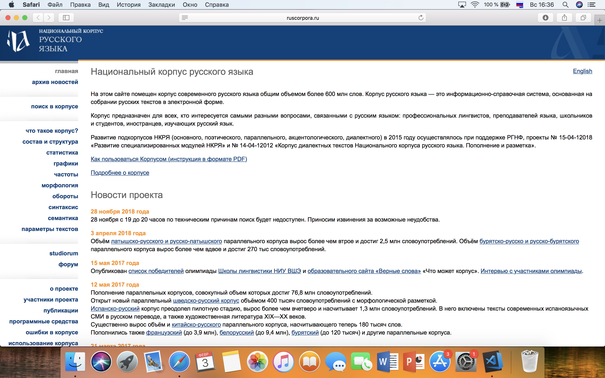

Пакулина Алина Николаевна

Данные об исследователе
- Место учебы:
НИУ ВШЭ, ФГН, ОП Филология
- Научные интересы:
Русская литература ХХ века, Англо-американская литература ХХ века, Теория литературы
- Немного о себе:
Люблю прокрастинировать и не люблю делать сайты
Как современные технологии могут помочь филологу
Развитие цифровых технологий имеет большое значение для филологических исследований. Так, онлайн-корпусы (например, НКРЯ) значительно упростили работу, связанную с историей языка. Электронные библиотеки и каталоги открыли доступ ко множеству текстов. Компьютерные программы позволили сократить время на сбор статистики.

Достоинства и недостатки сайта "Национальный корпус русского языка"
Несомненным достоинством сайта НКРЯ является его информативность; тем не менее, сама форма сайта требует доработки. Например, "поиск в корпусе" следует выделить из общего меню - или, по крайней мере, поставить выше раздела "архив новостей". Навигацию по сайту в целом можно было бы упростить, ведь не каждый пользователь готов читать 80 страниц pdf инструкции.
 НКРЯ
НКРЯ